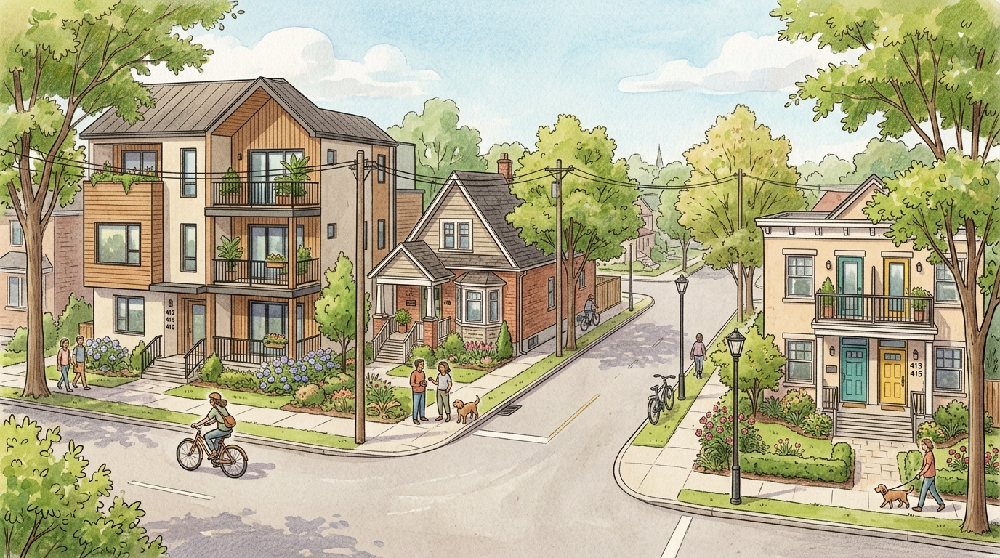
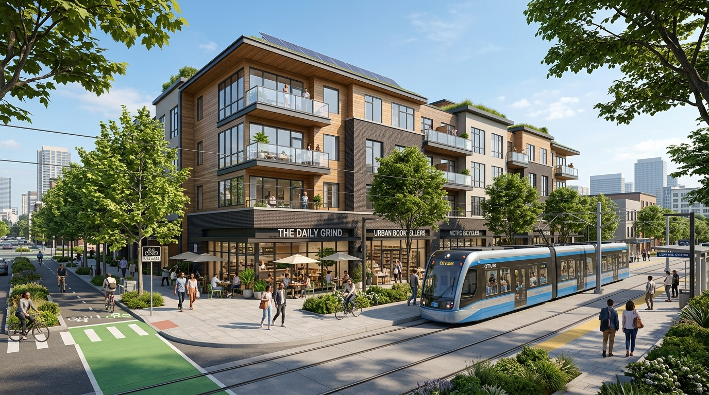

The Housing Crisis in Minneapolis
Before the 2040 Plan, Minneapolis was facing a severe housing shortage. The city's economic stability and livability were threatened by skyrocketing costs. Statistics showed that nearly half of all renters and two-thirds of senior renters were paying more than 30% of their income on rent.
The fundamental problem was rooted in outdated zoning: it was incredibly expensive and time-consuming to change zoning site-by-site, which effectively prohibited the building of affordable multi-family homes. To solve this, the city needed a systemic approach that changed rules across the entire municipality at once.
Key Zoning Reforms
The Minneapolis 2040 Plan introduced several bold changes to allow for "gentle density" and more flexible land use:

A vision of gentle density: triplexes and duplexes coexisting with traditional single-family homes
- Eliminating Single-Detached Only Zoning: While single-family homes are still allowed, they are no longer the only option. The city now allows duplexes and triplexes in all residential areas.
- Transit-Oriented Density: Allowing buildings of 3 to 6 stories along major transit routes to encourage use of public transportation.
- Mixed-Use Development: Permitting both residential and commercial uses within the same area or building, fostering vibrant street life.
- Removing Parking Mandates: Eliminating minimum off-street parking requirements to reduce construction costs and make housing more affordable.
Goals & Intended Outcomes

Transit-oriented development: mixed-use buildings along transit corridors
The plan was designed with clear, measurable goals in mind:
Housing Supply
Increase housing availability in all areas of the city to stabilize prices.
Climate Action
Cut greenhouse gas emissions by 80% by 2050 through reduced car dependence.
The Challenges of Implementation
"Environmentalists have used environmental reviews to stymie development. Changing this mindset remains a multi-year effort."
— Libby Murphy, Director of Policy, Minnesota Housing Partnership
Implementing such significant change was not without struggle. The rollout of the plan was severely disrupted by a lawsuit from opponents who used the Minnesota Environmental Rights Act as a weapon against the reforms. This legal battle caused a five-year delay in many of the planned changes.
However, the city's persistence demonstrated that durable change requires not just vision and technical expertise, but also immense community participation and patience.